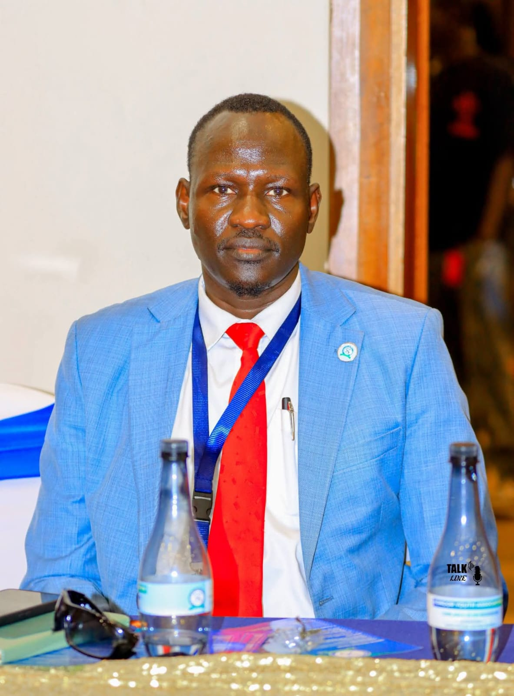

About TISS
The Tiordekuei Institute for Strategic Studies (TISS) Ltd is a premier research institution committed to advancing national, regional, and global security and informed policy-making through independent, interdisciplinary analysis. As a registered research body, TISS serves as a critical bridge between academic rigor and practical governance, addressing the most pressing challenges in national and international relations, economic security, and geopolitical strategy.
Our work is anchored in a fundamental belief: that policy oversight and foresight, when grounded in rigorous research and channeled through sound governance, becomes the foundation upon which stable and prosperous nations are built. TISS does not merely observe the currents of change—it equips leaders to navigate them.
The Tiordekuei Difference
Our name is unique, and so is our approach. The Tiordekuei Method integrates historical context with real-time data, combining the depth of academic scholarship with the urgency of strategic decision-making. We do not offer abstract theory divorced from reality, nor do we react to events without understanding their deeper roots. Instead, we provide a disciplined framework for understanding complexity—one that empowers our partners to act with confidence, clarity, and conviction.
Mission
To cultivate a safer, more stable world by equipping leaders with the foresight needed to navigate complexity. Through our core pillars of in-depth research, high-level dialogue, and strategic publications, TISS provides a platform for sound policy solutions that challenge the status quo and foster sustainable and inclusive economic growth and development. TISS works in partnership with academic institutions, government agencies, and private sector stakeholders to turn ideas into impact.
Vision
To be the definitive source of strategic insight where knowledge meets governance, and where the architects of change converge to shape a more secure and equitable future.
Founders
Our founders combine economics, engineering, operational systems, and public finance oversight to create TISS as a trusted research institution capable of shaping policy with both precision and purpose.

Manyuon Dhieu Chol
Economist, Founder and Managing Director
Manyuon brings rigorous economic insight to TISS governance, building the institution around disciplined research, strategic partnerships, and evidence-based analysis that informs national and regional policy choices.
Dhieu Isaiah Majok
Technical Operations Engineer
Dhieu designs and maintains the systems that keep TISS running smoothly, deploying technical infrastructure and operational workflows that support secure, scalable research delivery.
Wycliffe Ochieng'
Engineer
Wycliffe applies engineering principles to organization development, creating practical solutions and tools that enable TISS to translate complex ideas into real-world impact.
CPA Joseph Thon
Auditor General
Joseph ensures accountability and integrity across TISS operations, bringing financial oversight and audit discipline to support transparent, responsible institutional growth.